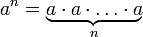
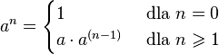

Potęgowanie
W poprzednich lekcjach poznałeś czym jest rekurencja, dowiedziałeś się co to jest stos.
W tej lekcji jak i w trzech następnych mniej uwagi poświęcimy rekurencji,
a więcej realnym problemom informatycznym oraz szybkim algorytmom, które je rozwiązują.
W tych lekcjach będziemy posługiwać się rekurencją jako narzędziem do pisania prostych programów.
W tej lekcji tym problemem będzie obliczanie potęgi liczby naturalnej.
Potęga liczby naturalnej an to n-krotne mnożenie liczby a. Innymi słowy:

Dodatkowo przyjmuje, się że a0=1.
W tej lekcji zajmiemy się problemem obliczania potęgi.
Zadaniem będzie napisać funkcję, która przyjmuje liczby a oraz n. Zakładamy, że a jest liczbą dodatnią, a n nieujemną.
Oczywiście jako wynik powinna zwracać potęgę an.
Jedną z pierwszych metod, jaka może przyjść na myśl, gdy chcemy rozwiązać ten problem,
to napisanie pętli, która wykona się n razy i w każdym kroku pomnoży dotychczasowy wynik przez liczbę a.
Drugą metodą jaka może przyjść na myśl, to rozpisanie tej definicji
w postaci rekurencyjnej. Na przykład tak jak w przypadku silni:

Twoim zadaniem jest zaimplementować te dwie funkcje oraz porównać je z funkcjami wzorcowymi.
Kiedy skończysz powyższe zadanie przejdź do kolejnej części lekcji, w której poznasz metodę pozwalającą znacznie szybciej obliczyć potęgi.